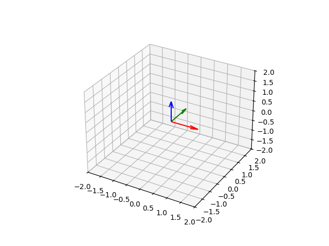

Sistemas de Coordenadas (3D)
CoordinateSystem3D
Um sistema de coordenadas 3D definido por três eixos Direction3D e uma origem Point3D. Internamente constrói uma matriz afim 4×4 para transformações de mudança de base.
import space.CoordinateSystem3D
import space.elements.Direction3D
import space.elements.Point3D
import units.Angle
// Sistema cartesiano destrorso padrão
val standard = CoordinateSystem3D.MAIN_3D_COORDINATE_SYSTEM
// Sistema de coordenadas personalizado
val custom = CoordinateSystem3D(
xDirection = Direction3D(1.0, 0.0, 0.0),
yDirection = Direction3D(0.0, 0.0, 1.0), // eixo y apontando "para cima" = z do mundo
zDirection = Direction3D(0.0, -1.0, 0.0), // eixo z apontando "para dentro" = -y do mundo
origin = Point3D(1.0, 2.0, 0.0)
)Propriedades
| Membro | Descrição |
|---|---|
xDirection |
Eixo x unitário |
yDirection |
Eixo y unitário |
zDirection |
Eixo z unitário |
origin |
Ponto de origem |
matrix |
Matriz de rotação 3×3 |
affineMatrix |
Matriz de transformação afim 4×4 |
Rotação
val sys = CoordinateSystem3D.MAIN_3D_COORDINATE_SYSTEM
// Rotacionar o sistema 45° em torno do eixo z
val rotado = sys.rotate(Direction3D.MAIN_Z_DIRECTION, Angle.Degrees(45.0))
Mudança de base (3D)
Qualquer Entity3D pode ser reexpresso em outro sistema de coordenadas:
val sistemaA = CoordinateSystem3D(
xDirection = Direction3D.MAIN_X_DIRECTION,
yDirection = Direction3D.MAIN_Z_DIRECTION, // y → z
zDirection = Direction3D.MAIN_Y_DIRECTION, // z → y
origin = Point3D(1.0, 0.0, 0.0)
)
val ponto = Point3D(2.0, 0.0, 1.0) // como escrito no sistemaA
val pontoNoMain = ponto.changeBasis(
asWrittenIn = sistemaA,
to = CoordinateSystem3D.MAIN_3D_COORDINATE_SYSTEM
)O cálculo é:
to.affineMatrix⁻¹ × asWrittenIn.affineMatrix × ponto.affineMatrixPlane
Um plano 3D definido por um ponto de origem e duas direções geradoras. A direção normal é calculada automaticamente como o produto vetorial dos dois vetores geradores.
import space.Plane
import space.elements.Direction3D
import space.elements.Point3D
val planoXZ = Plane(
planeOrigin = Point3D(0.0, 0.0, 0.0),
planeXDirection = Direction3D.MAIN_X_DIRECTION,
planeYDirection = Direction3D.MAIN_Z_DIRECTION
)
println(planoXZ.normalDirection) // Direction3D(0, -1, 0) ou (0, 1, 0)
// Verificar se um ponto está no plano
println(planoXZ.pointIsInPlane(Point3D(3.0, 0.0, 5.0))) // true
println(planoXZ.pointIsInPlane(Point3D(0.0, 1.0, 0.0))) // falseComo sistema de coordenadas
Todo Plane expõe um CoordinateSystem3D para mudanças de base:
val sistemaDeCoord: CoordinateSystem3D = planoXZ.coordinateSystem3D